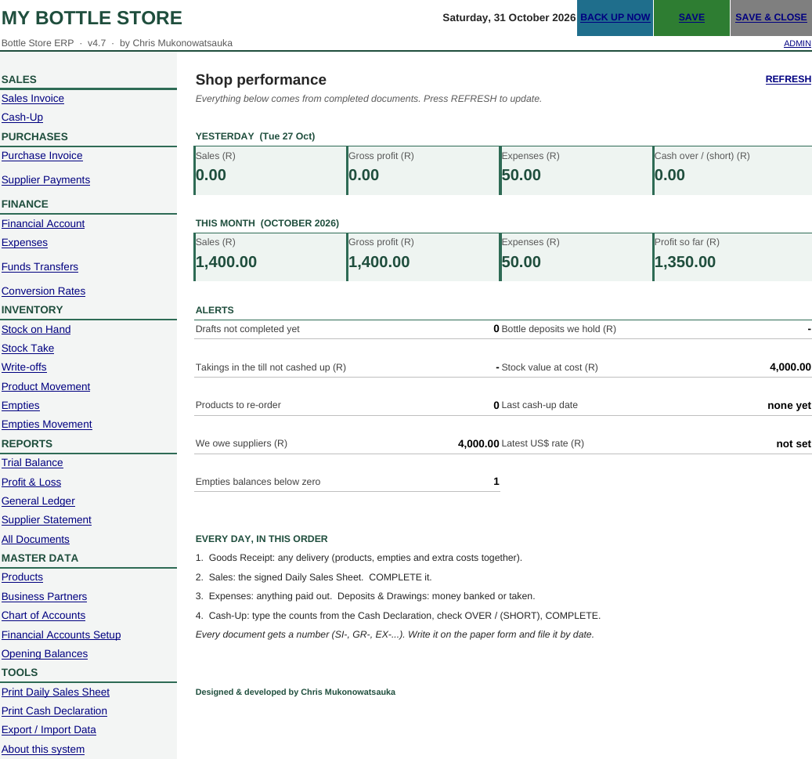
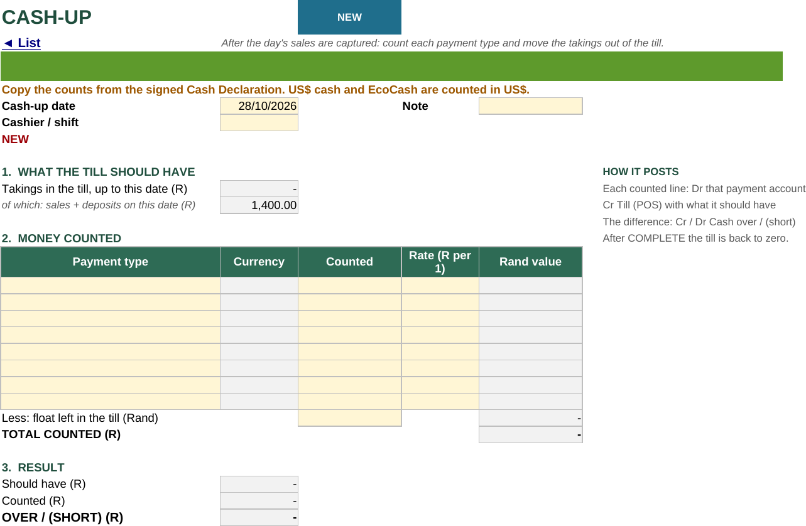
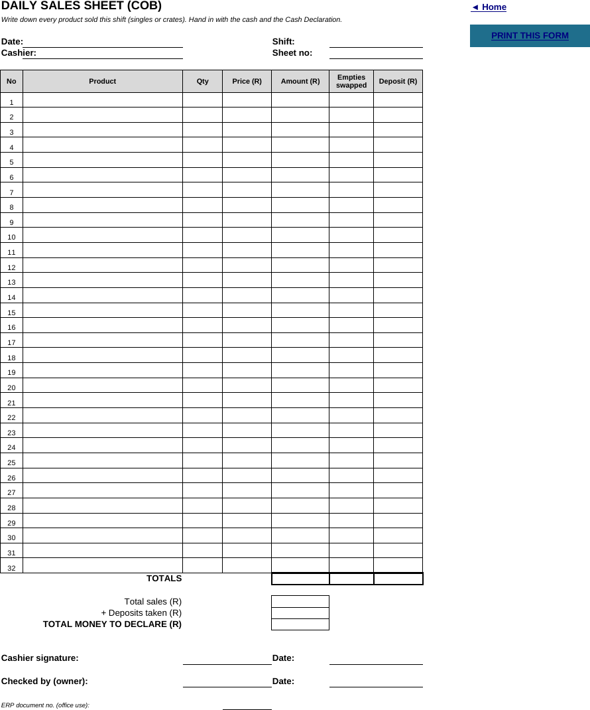
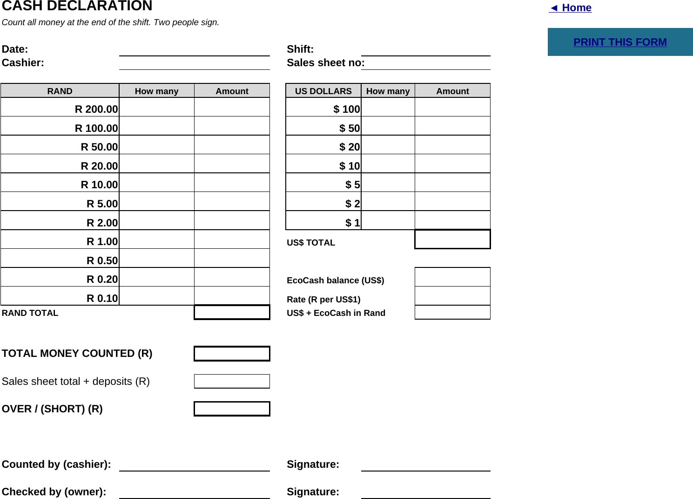
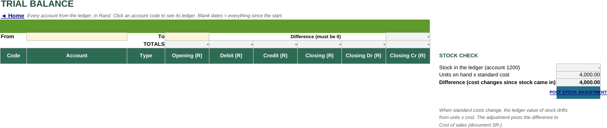
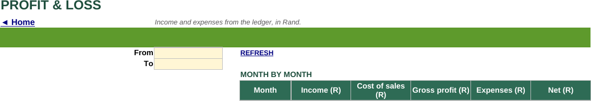
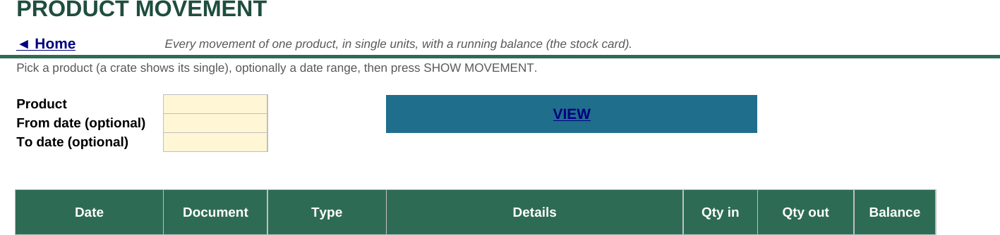
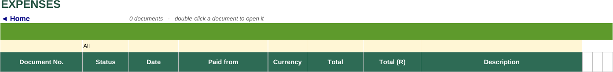
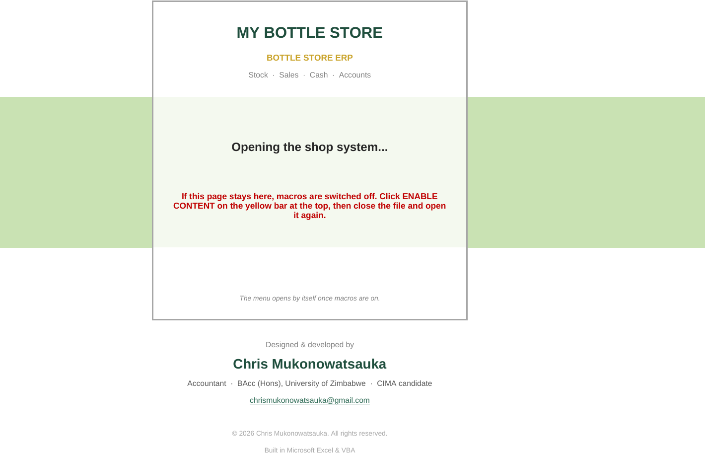
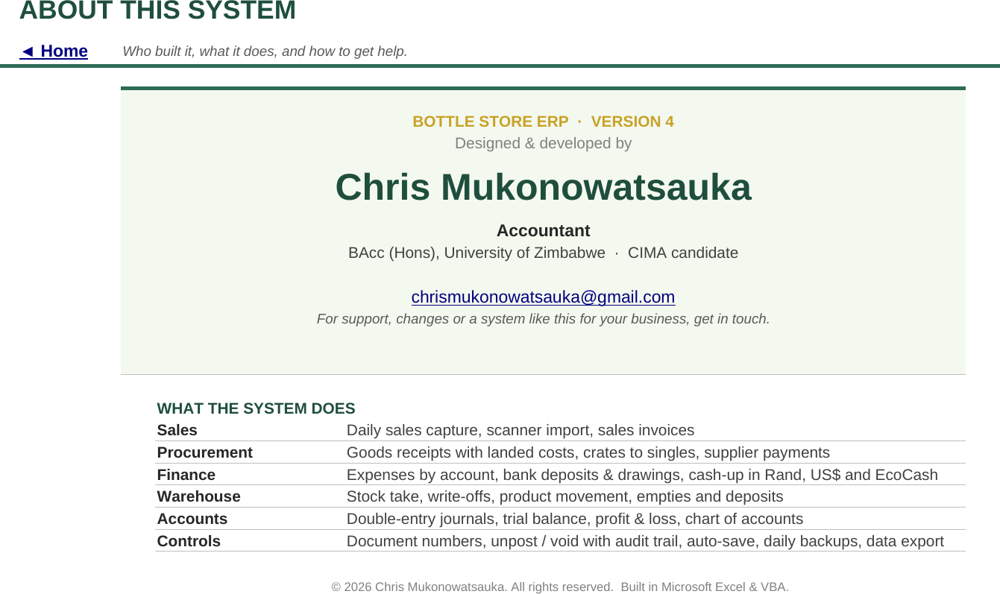

An Excel and VBA system that runs the books, stock and cash for a small family bottle store. Version 4.7.
~5,500lines of VBA
~290procedures
7modules
47sheets
USD + ZARcurrencies
The problem
A family bottle store in Beitbridge was keeping its books by hand. The owner is not an accountant, and I work remotely from Harare. Stock went missing without anyone knowing when, takings did not tie to the till, and month-end meant reconstructing everything from paper.
The store already had Excel. So instead of buying software, I built an ERP inside a single workbook. It is simple enough for the shop to use every day, and it keeps proper double-entry books I can review from a distance.
What it does
Sales
Sales invoices
Daily cash-up
Purchases
Purchase invoices (goods receipt)
Landed costs
Supplier payments
Finance
Expenses
Funds transfers
Conversion rates (R per US$)
Cash, bank and EcoCash accounts
Inventory
Stock on hand
Stock take and write-offs
Product movement trail
Empties (crates, bottles)
Reports
Trial balance
Profit and loss by month
General ledger
Supplier statements
Master data and tools
Products, partners, chart of accounts
Opening balances
Printable daily forms
Export and import, barcode import
A day in the shop
Paper first. The cashier writes every sale on a printed Daily Sales Sheet and counts the till on a Cash Declaration. Both come out of the system already numbered.
Goods receipt. Any delivery gets captured, with products, empties and any extra costs such as transport.
Sales. The signed sales sheet is typed in and completed.
Expenses. Anything paid out of the till, plus deposits and drawings.
Cash-up. The counts from the Cash Declaration go in. The system works out what the till should hold and shows OVER or (SHORT).
The dashboard opens on yesterday's and month-to-date figures, plus alerts: drafts not completed, unbanked takings, products to re-order, stock value, and empties balances.
How it posts
Every completed document writes balanced journal lines to the ledger. The shop never sees a debit or a credit. They just fill in forms.
Document
Debit
Credit
Sales invoice
Till (POS) Cost of sales
Sales Stock
Cash-up
Cash USD / Cash ZAR / EcoCash
Till (POS)
Purchase invoice
Stock (incl. landed costs)
Supplier or Cash
Write-off
Stock losses
Stock
Funds transfer
Bank
Cash
Expense
Expense account
Cash or Bank
Whatever is left in the till account after cash-up is the cashier's over or short, so it is visible in the ledger rather than lost.
Controls
Document lifecycle
Draft, Complete, Void, Unpost
Nothing hits the ledger until Complete
Sequential numbers that match the paper forms
Audit trail
Product movement card per item
All Documents list with status
Trial balance check against stock sub-ledger
Safety
Automatic dated backups
Protected sheets and locked VBA project
Macros required to open (start screen guard)
Screens
Click any screen to enlarge. All figures shown are test data.

Main menuEvery module in one place, with the day's figures and alerts.

Cash-upCounted cash by currency against what the till should hold.

Daily Sales SheetPrinted form the cashier fills in by hand.

Cash DeclarationRand and US dollar notes counted and signed by two people.

Trial balanceWith a stock check against the product sub-ledger.

Profit and lossMonth by month: income, cost of sales, gross profit, expenses, net.

Product movementStock card for one product with a running balance.

Document listEvery expense, invoice and transfer, with status.

Start screenShown only when macros are off, telling the user what to do.

AboutWhat the system covers, in one page.
What I'd build next
A phone-friendly web front end backed by Google Sheets, so the shop can capture sales and cash-up on a phone and I can see the numbers live from Harare, while the Excel books stay the system of record.
The workbook itself is not public, because it runs a real business. I'm happy to give a live demo or share a walkthrough video on request.